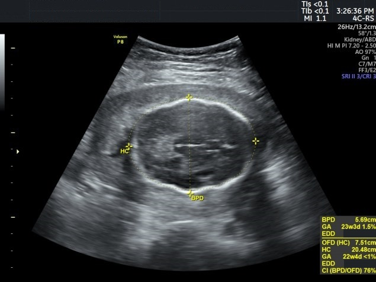
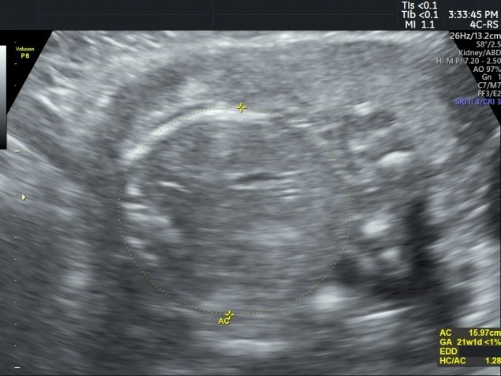

Página 5 · Sofrimento fetal crônico
PIG × restrição verdadeira e o marcador mais sensível
A zona de dúvida p3–p10
A zona de dúvida p3–p10. Dois fetos podem estar igualmente abaixo do percentil 10 e contar histórias opostas. A chave está na faixa entre o percentil 3 e o percentil 10 — a zona de dúvida — combinada ao Doppler.
Doppler umbilical normal → PIG constitucional
Doppler umbilical normal → PIG constitucional. Feto entre p3 e p10 com Doppler da umbilical normal passa a ser tratado como PIG constitucional, não como restrição. É o pequeno sadio: placenta entregando sangue, sem sofrimento por trás.
O PIG não se antecipa
O PIG não se antecipa. E isso muda a conduta: no PIG constitucional não se antecipa o parto — não se retira antecipadamente um feto só por ser pequeno. Segue-se acompanhando com Doppler, que precisa permanecer normal. Antecipar um PIG é transformar um bebê saudável num prematuro iatrogênico.
Abaixo do p3 OU Doppler alterado → restrição verdadeira
< p3 OU Doppler alterado → restrição verdadeira. Do outro lado da bifurcação: feto abaixo do percentil 3 OU com Doppler alterado é restrição verdadeira, sem discussão. Basta um dos dois — não precisa dos dois juntos.
A regra prática da banca
A regra prática da banca. Para a prova, guarde o atalho: diante de peso abaixo do percentil 10, responde-se restrição de crescimento — a banca costuma não discutir o percentil 3. O conceito fino (p3) e a regra prática (p10) convivem: entenda o p3, responda o p10.
Interativo: avance a linha temporal e veja a ordem da queda.
A circunferência abdominal afina antes (fígado sem glicogênio), depois a cefálica, por último o fêmur. Cabeça normal não exclui alteração: só diz que o primeiro achado é a abdominal reduzida.A circunferência abdominal — o marcador mais sensível
A circunferência abdominal — o marcador mais sensível. Agora a pegadinha que cai literalmente como “qual o indicador ultrassonográfico mais sensível”. A resposta é a circunferência abdominal 🎯 — o primeiro parâmetro a se alterar na restrição. Não é a cefálica, não é o fêmur.
O mecanismo: glicogênio hepático
O mecanismo: glicogênio hepático. E há uma razão fisiológica bonita por trás. A falta de fluxo consome o glicogênio hepático do feto; como o fígado ocupa boa parte do abdome, a circunferência abdominal cai antes da circunferência cefálica e do comprimento do fêmur — o osso demora mais a demonstrar a queda de fluxo. Uma cabeça com diâmetro ainda normal não significa ausência de alteração central: significa apenas que o primeiro achado ultrassonográfico é a circunferência abdominal reduzida.

Plano cefálico (cabeça relativamente poupada)
Plano abdominal (circunferência abdominal reduzida)Compare a proporção, não cada medida isolada: aqui o abdome é o componente mais penalizado (menor reserva hepática/glicogênio), elevando a relação cefálica/abdominal — o padrão da restrição assimétrica.
Case courtesy of Mostafa Elfeky, Radiopaedia.org, rID 85176 · fonte / licença: CC BY-NC-SA 3.0
| Cenário | Interpretação | Conduta |
|---|---|---|
| p3–p10 + Doppler umbilical normal | PIG constitucional | Acompanhar com Doppler · não antecipar |
| < p3 OU Doppler alterado | RCIU verdadeira | Conduzir como restrição |
| Regra da banca: < p10 | responder RCIU | — |
Quiz — fixação
Feto com peso estimado no percentil 6, Doppler da artéria umbilical normal. Conduta?
- Gabarito B. Entre p3 e p10 com Doppler umbilical normal = PIG constitucional; não se antecipa, acompanha-se.
- A sem Doppler alterado e acima do p3, não é restrição verdadeira — antecipar transforma um pequeno sadio em prematuro iatrogênico.
- C operar aqui é o mesmo erro: sem Doppler alterado e acima do p3, não há restrição verdadeira.
- D a conduta é seguimento com Doppler (mantendo-o normal), não repetir biometria em 24 h — o crescimento não muda em um dia.
“Qual o indicador ultrassonográfico mais sensível / primeiro a se alterar na restrição?”
- Gabarito C. A falta de fluxo consome o glicogênio hepático; como o fígado é abdominal, a circunferência abdominal cai primeiro.
- A a cefálica é poupada mais tempo — cai depois; responder cabeça é justamente a pegadinha.
- B o osso (fêmur) é o mais tardio a demonstrar a queda de fluxo.
- D o diâmetro biparietal também é medida da cabeça, poupada — o erro é achar que “o mais importante” (a cabeça) é “o primeiro a alterar”.
Feto com circunferência cefálica ainda normal e circunferência abdominal reduzida. Interpretação correta?
- Gabarito A. A cabeça normal apenas reflete que o primeiro parâmetro a cair é a abdominal — não descarta alteração.
- B cabeça normal ≠ ausência de alteração (é a leitura falsamente tranquilizadora).
- C poupar a cabeça e reduzir o abdome é o padrão assimétrico, não simétrico.
- D a abdominal reduzida é justamente o marcador mais sensível — o oposto de irrelevante.